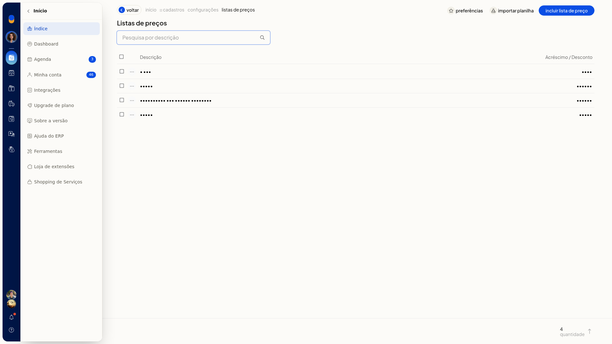
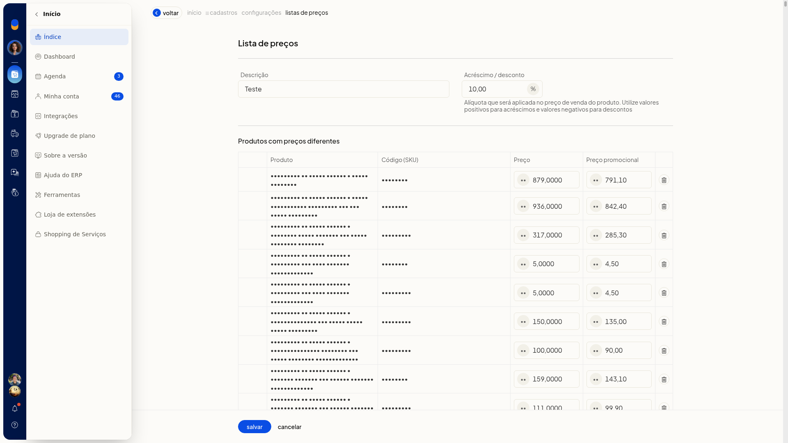
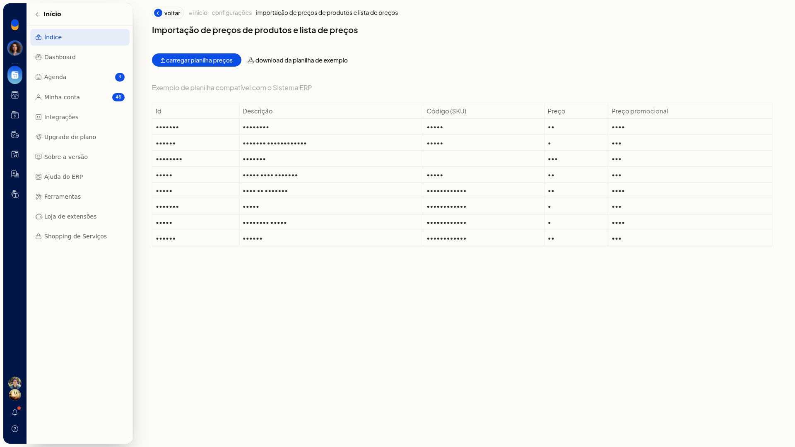
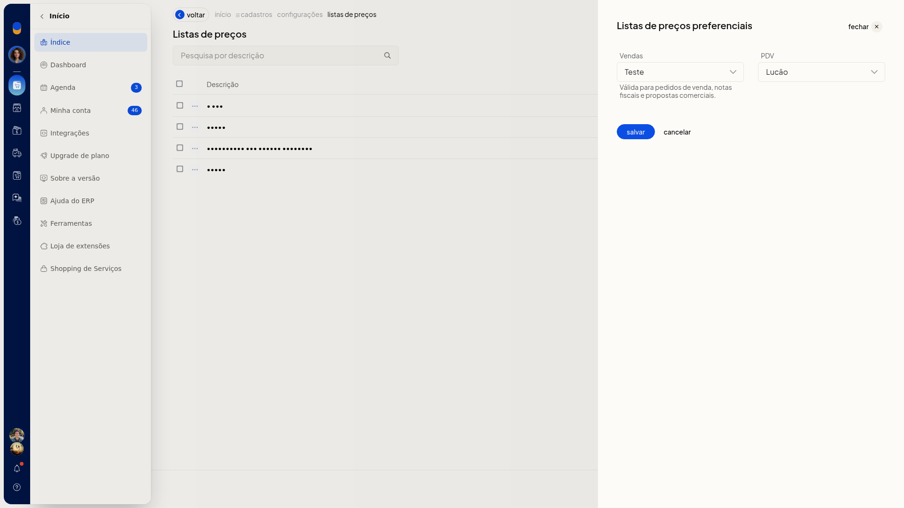
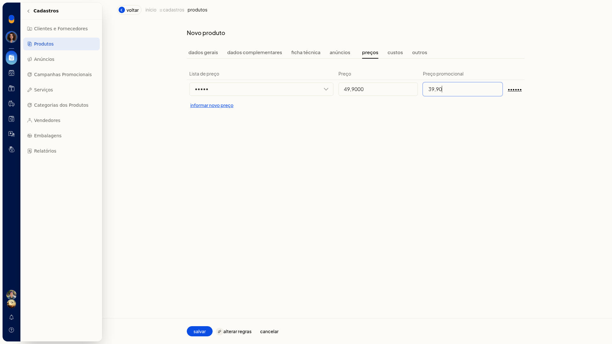

Listas de preços
No ERP da Olist, uma lista de preços aplica um acréscimo ou um desconto sobre o preço de venda. Você cadastra a lista, informa preço e preço promocional diferentes por produto, importa esses valores por planilha e escolhe qual lista vale em vendas e no PDV da Olist.
A tela fica em Configurações > Configurações ERP > Cadastros > Listas de preços.
Importante
- O acréscimo ou desconto da lista não se aplica a vendas pelo aplicativo móvel nem a vendas via API.
- Use valor positivo para acréscimo e valor negativo para desconto. O percentual segue o texto da tela: alíquota aplicada no preço de venda do produto.
- Preço e Preço promocional usam vírgula decimal, em reais.
Instruções
Cadastrar uma lista de preços
-
Acesse Configurações > Configurações ERP > Cadastros > Listas de preços.
-
Confira as listas já cadastradas, com as colunas Descrição e Acréscimo/Desconto. Use a pesquisa para localizar uma lista.

-
Clique em Incluir lista de preço.
-
Informe a Descrição. O campo não é obrigatório.
-
Informe Acréscimo/desconto. O campo não é obrigatório.
-
Clique em Salvar. A alíquota informada será aplicada ao preço de venda do produto.
Informar preços diferentes na lista
Para lançar preço diferenciado, o produto já precisa existir no cadastro.
-
Em Listas de preços, abra a lista desejada.
-
Confira Acréscimo/desconto e a tabela Produtos com preços diferentes, com as colunas Produto, Código (SKU), Preço e Preço promocional.

-
Clique em Adicionar item.
-
Busque o Produto já cadastrado.
-
Informe Preço e Preço promocional. Os campos não são obrigatórios. O Código (SKU) aparece na linha e não é digitado nela.
-
Clique em Salvar. A lista passa a usar esses preços no lugar do percentual geral para os produtos informados.
Importar preços por planilha
-
Em Listas de preços, clique em Importar planilha. O mesmo caminho está em Mais ações > Importar preços de produtos para lista de preços.
-
Clique em Download da planilha de exemplo. As colunas são Id, Descrição, Código (SKU), Preço e Preço promocional.

-
Preencha a planilha com os preços da lista.
-
Clique em Carregar planilha para enviar o arquivo.
Definir as listas preferenciais
-
Em Listas de preços, clique em Preferências. O mesmo caminho está em Mais ações > Configurar as listas de preços preferenciais.
-
Em Vendas, selecione a lista já cadastrada. Essa lista vale para pedidos de venda, notas fiscais e propostas comerciais.
-
Em PDV, selecione a lista já cadastrada. Os dois campos não são obrigatórios e mostram Selecione e as listas da conta.

-
Clique em Salvar. O ERP da Olist passa a usar a lista escolhida em vendas e a lista escolhida no PDV.
Informar a lista no cadastro do produto
-
Acesse Cadastros > Produtos > Incluir produto.
-
Abra a aba Preços.
-
Selecione Lista de preço.
-
Informe Preço e Preço promocional. Os campos não são obrigatórios.

-
Clique em Salvar. O produto fica com a lista, o preço e o preço promocional informados.
Informações adicionais
A lista de vendas cobre os documentos comerciais
A lista selecionada em Vendas vale para pedidos de venda, notas fiscais e propostas comerciais.
A lista pode ser exportada
No menu da linha da lista, exporte o arquivo em CSV ou Excel.